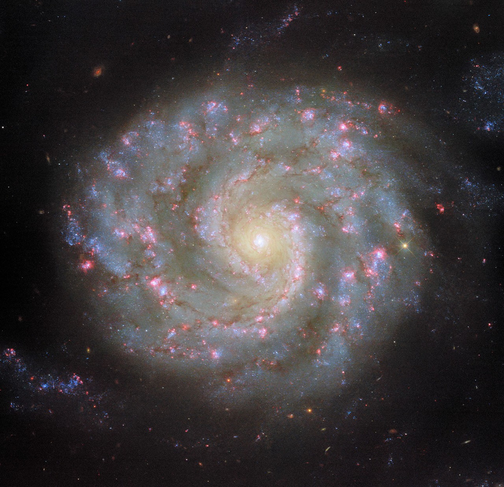
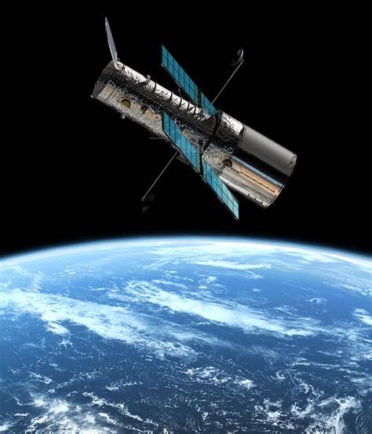
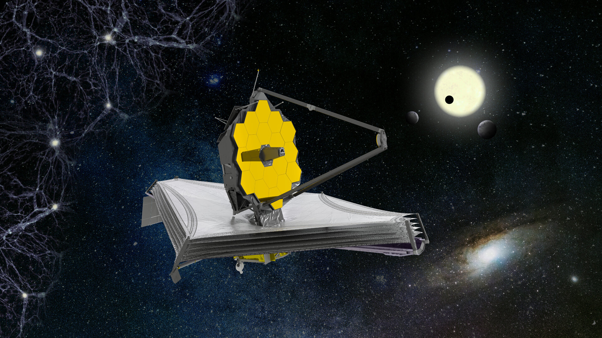
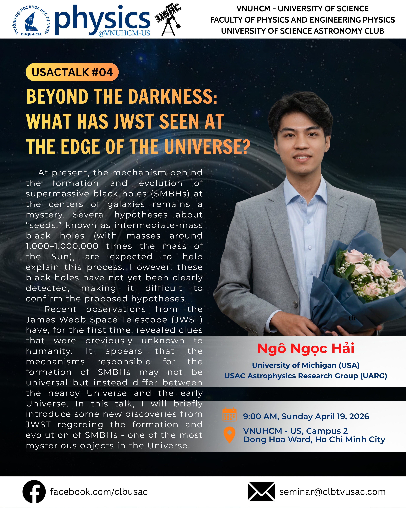

Hai Ngo Ngoc
Ph.D. student at University of Michigan, USA
Galaxy Dynamics Lab - studying central black hole seeds and their
co-evolution with host galaxies across cosmic time.
USAC Astrophysics Research Group - investigating the formation of central black holes
and their co-evolution with host galaxies using world-class observatories (JWST, HST, ALMA, VLT, and ELT).
"A journey of a thousand miles begins with a single step"

Core Themes of
My Research

Black Hole Formation and Growth
Where do the seeds of today’s massive black holes come from, and how do they grow into the giants we observe? I use precise dynamical masses of nearby black holes as fossil records of their formation and growth history.
Read more →
Massive Black Holes Across the Mass Spectrum
Measuring black hole masses continuously from the intermediate-mass regime in dwarf galaxies and star clusters up to the supermassive black holes of giant ellipticals, with a single, consistent dynamical approach.
Read more →
Black Hole and Galaxy Coevolution
Black holes and their host galaxies appear to grow together. I test how tightly that coupling holds across morphology, mass and environment using dynamical masses paired with detailed host measurements.
Read more →
Stellar and Gas Kinematics and Galaxy Dynamics
Kinematics is the most direct probe of mass. I model stellar and cold-gas motions in galactic nuclei to weigh central black holes and to characterise the dynamical structure of their hosts.
Read more →
Computational Astrophysics, Simulations, and Modelling
Building simulation and modelling tools that predict what future instruments can actually measure, and turning raw datacubes into physical parameters through forward modelling.
Read more →Observational Facilities
We use numerous telescopes at different wavelengths to study photometry and kinematics of objects. Most are state-of-the-art, including ALMA, HST, VLT, JWST, and we look forward to the [...]



Recent Publications
Outreach & Public Talks
Bringing black hole astrophysics to students and the public through USACTalks and community seminars.

USACTalk #04USACTalk #04 - "Beyond the Darkness: What Has JWST Seen at the Edge of the Universe?" - a packed USAC seminar on how JWST is rewriting the timeline of the earliest galaxies and supermassive black holes, from Little Red Dots to the race between light and heavy seeds.
View All Outreach →